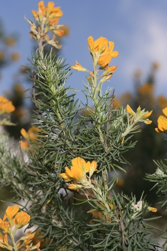

Ayuntamiento de Senés
JARDIN BOTANICO DE ESPECIES AUTOCTONAS DE SENES

Borago officinalis

El rascalenguas o rascaviejas (Borago officinalis) es una planta herbácea anual muy común en el ámbito mediterráneo, conocida por sus hojas ásperas y su característico tacto rugoso. Se desarrolla principalmente en terrenos alterados, huertos y bordes de caminos.
Presenta tallos carnosos y cubiertos de pelos rígidos, con hojas grandes, ovaladas y también rugosas. Sus flores son de un intenso color azul, con forma estrellada, y cuelgan ligeramente, aportando un gran valor ornamental y ecológico.
El rascalenguas se distribuye por la región mediterránea y otras zonas templadas, creciendo de forma espontánea en huertos, campos y terrenos removidos. Prefiere suelos ricos en nutrientes y bien drenados.
Esta planta ha sido utilizada tradicionalmente por sus propiedades medicinales, destacando sus efectos antiinflamatorios y sudoríficos. También ha sido consumida como planta comestible, especialmente sus hojas y flores.
El rascalenguas simboliza la sencillez y la utilidad de las plantas silvestres, al combinar propiedades medicinales y valor alimenticio. También se asocia con la fortaleza por su textura áspera.
En Senés, esta planta era conocida tanto por su uso en la cocina como por sus propiedades medicinales. Sus hojas se utilizaban en platos tradicionales, mientras que sus flores también tenían valor ornamental.
Florece principalmente en primavera, produciendo flores azules muy llamativas que atraen a insectos polinizadores.
El nombre rascalenguas hace referencia a la textura áspera de sus hojas. Además, sus flores son comestibles y se utilizan en algunas recetas tradicionales.